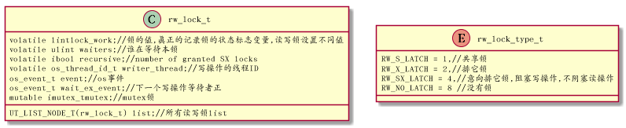
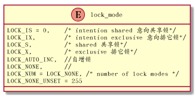
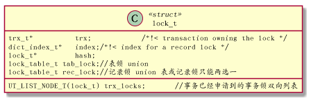
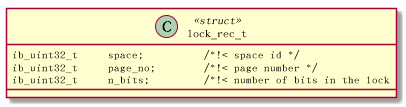
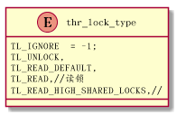
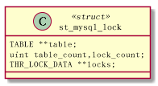
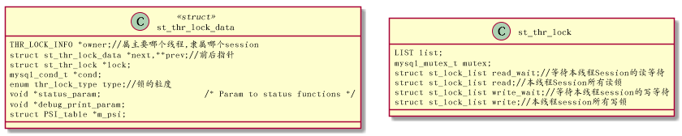
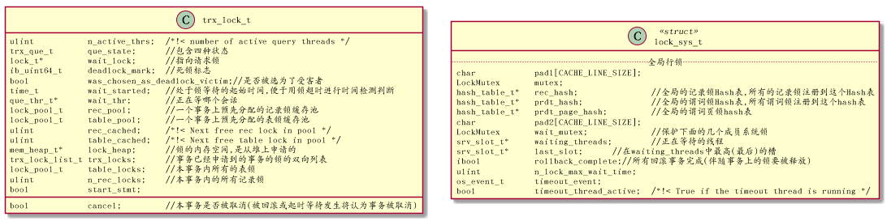

Table of Contents
1 简介
1.1 系统锁: 是保护共享的内存数据结构 不被并发的session同时修改.如各种MUTEX(如trx_sys->mutex,事务锁管理需要使用的lock_sys->mutex,回滚段内存结构管理需要使用rseg->mutex)
1.2 事务锁: 用户 SQL执行过程中,保护用户表中数据不被并发的session同时修改,如我们常提及的读锁,写锁,意向锁.事务锁是事务并发访问控制技术中基于技术中基于锁的并发控制技术所指的锁。
2 锁的概述
从技术本质上看，加锁操作就是为特定对象设置一个标志位,然后 使用锁机制(对象上存在标志位则不能改写,放弃加锁请求或等待锁释放后再进行操作)和释放锁 锁的另外一层含义是抑制并发,保护共享资源即在抑制并发。
2.1 全局锁表
全局锁表: 1 元数据锁表;2行级锁表 Mysql Server层提供了一个全局的元数据锁表"MDL_map_ m_locks",用以处理DDL之间的并发,处理DDL和DML之间的并发,并发冲突根源在于对于数据的竞争
2.1.1 第一阶段,初始化,Mysql Server 层会初始化出两个全局变量,InnoDB初始化一个全局变量:
- Mysql Server 层初始化出一个个全局事务管理器,对系统全局事务进行管理，如一致性读要使用MVCC管理器,回滚段等.
- Mysql Server层初始化出另一个全局中的元数据锁表，对系统全部元素锁进行管理.其中 Hash表"m_locks"上注册了全部元数据(GLOBAL和COMMIT元数据锁除外)
- InnoDB 层初始化出一个全局行级锁表,对InnoDB层内全部行级锁进行管理，包括记录锁,谓词锁,谓词页锁,其中 lock_sys上有三个hash表，注册了全部各类型的行级锁
2.1.2 第二阶段 运行态.接受用户sql语句，进行语法分析，得到sql语句的加锁语义
- 如果是DDL语句,则交给MYSQL SERVER 层处理，对应的锁是元数据锁
- 如果是DML或DQL语句，则交给InnoDB层处理,对应的锁是行级锁
2.1.3 第三阶段 结束 有两层含义 1. 事务结束 需要释放锁(体现两阶段锁的思想),2.数据库引擎系统结束，释放系统资源包括释放锁
2.2 MDL_request 来自SQL语句语义的加锁请求,不同的sql语句暗含不同的加锁语义,语义解析阶段即把加锁语义分析获得
- MDL_request : 每个会话即用户连接(物理线程)上存在一个元数据锁的上下文，用以表示本会话生命周期内(实则是本会话的当前事务生命期内)的各种锁的施加,获得等情况
- MDL_ticket: 表示接收到加锁申请,加锁者买到一张ticket,但需要准备接受安检,安检结果是: 一个加锁请求即MDL_request对象来临后，锁被授予也可以被拒绝(被拒绝则发出加锁请求会话处于等待设置其MDL_context上的"m_wait"),如果被授予,则生成一个MDL_lock对象,绑定在MDL_ticket对象上,此时加锁请求完成.
3 系统锁
InnoDB提供两种系统锁,用于多线程间同步与互斥。第一是读写锁,使用读锁和写锁实现互斥并发会话对同一个内存的对象(如数据缓存区)的修改操作.第二是mutex锁,利用操作系统的mutex功能对共享对象加锁,以完全互斥的方式保护内存中的数据结构.
3.1 读写锁
InnoDB提供一种自施锁,是基于操作系统的Test-And-Sety原子指令实现.称为read-write-lock

读销可以有多个施加者,写锁只有一个施加者,排它锁/写锁,写操作加x锁,本类在sync0rw.h
3.2 读写锁的创建与释放见rw_lock_create_func()
4 记录锁的基本数据结构
4.1 锁的粒度
InnoDB的事务锁,支持四种基本的锁

4.2 锁的种类
##见lock0lock.h
#define LOCK_ORDINARY 0 /*!< this flag denotes an ordinary
next-key lock in contrast to LOCK_GAP
or LOCK_REC_NOT_GAP */
//间隙锁记录之前的间隙被锁定,阻止记录被修改,也阻止记录前间歇被插入
#define LOCK_GAP 512 /*!< when this bit is set, it means that the
lock holds only on the gap before the record;
for instance, an x-lock on the gap does not
give permission to modify the record on which
the bit is set; locks of this type are created
when records are removed from the index chain
of records */
//记录被锁定,记录之前的间隙不被锁定
#define LOCK_REC_NOT_GAP 1024 /*!< this bit means that the lock is only on
the index record and does NOT block inserts
to the gap before the index record; this is
used in the case when we retrieve a record
with a unique key, and is also used in
locking plain SELECTs (not part of UPDATE
or DELETE) when the user has set the READ
COMMITTED isolation level */
//插入意见锁
#define LOCK_INSERT_INTENTION 2048 /*!< this bit is set when we place a waiting
gap type record lock request in order to let
an insert of an index record to wait until
there are no conflicting locks by other
transactions on the gap; note that this flag
remains set when the waiting lock is granted,
or if the lock is inherited to a neighboring
record */
#define LOCK_PREDICATE 8192 /*!< Predicate lock */
#define LOCK_PRDT_PAGE 16384 /*!< Page lock */
4.3 锁的基本结构

5 记录锁
5.1 记录锁的数据结构

本结构体之后紧跟着一个位图,标记了一个页面中有哪些记录被加锁,这说明锁不是施加在记录上，而是施加在页面 上.
5.2 记录锁的生命周期
记录锁的初始化: lock_t* RectLock::lock_alloc() 记录锁被使用完毕后,随着事务结束,被lock_release()->lock_rec_dequeue_from_page()释放
5.3 锁的施加
lock_clust_rec_read_check_and_lock();//因为读操作在主键索引记录上加记录锁 lock_clust_rec_modify_check_and_lock();//国为修改(更新,删除)操作主键索引记录上加记录锁 lock_sec_rec_read_check_and_lock();//因为读操作在二级索引上加记录锁 lock_sec_rec_modify_check_and_lock();//因为修改操作在二级索引上加记录锁
6 SQL语义定义锁
MYSQL 上层是Server,提供词法分析,语法分析,SQL优化和执行器的执行框架,InnoDB就是负责事务和存储的插件
对于事务的处理,并不是简单地交由各个插件独立处理,而是在Mysql Server层开始,就做了宏观的规定,这些规定落在thr_lock.h,thr_lock.c,handler.cc,handler.h这些文件中
6.1 锁的粒度
在thr_lock.h中,定义了Mysql Server层的锁的粒度.

6.2 重要的数据结构
innoDB的row0mysql.h中定义了一些重要的结构体,存放了一个表的元组操作相关的一些重要信息,这个结构起了cache作用,其主要作用还是汇集row上的相关操作 其他三个重要的结构体,属于mysql server层

线程Session中锁整体相关信息

6.3 InnoDB对接Mysql Server
6.4 事务与锁
锁发生在一个事务内部,所以锁信息依附于一个事务,一个会话上,同一时刻只能有一个事务
